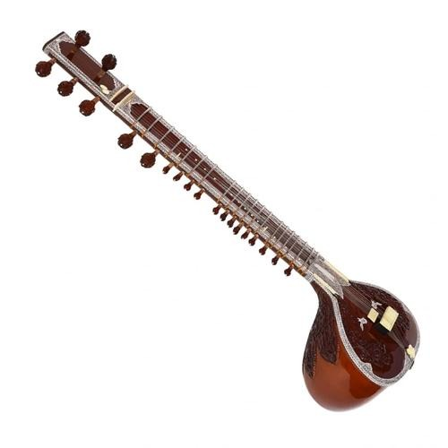
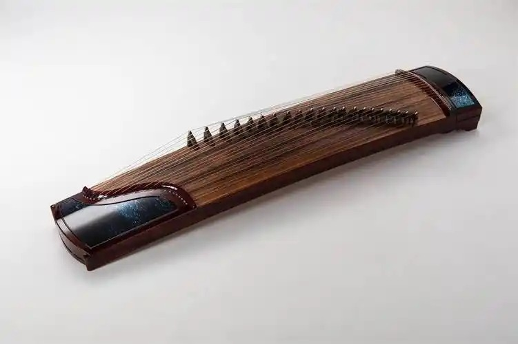
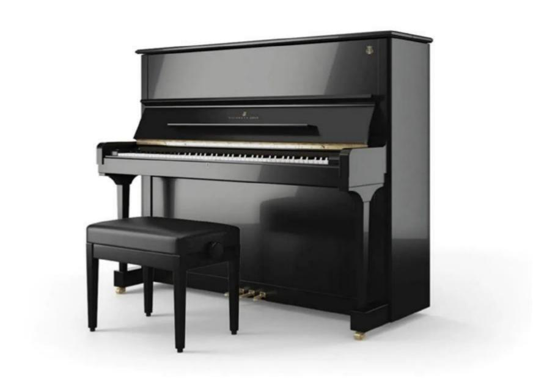
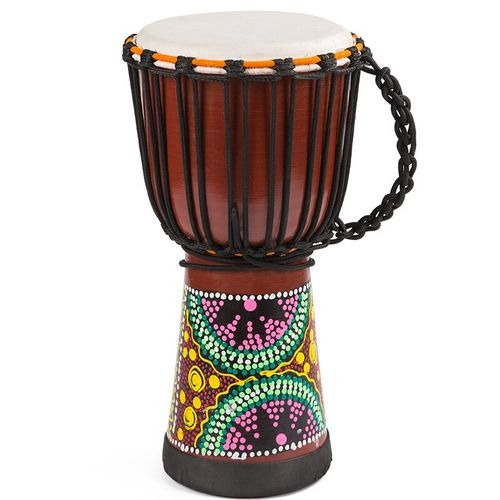
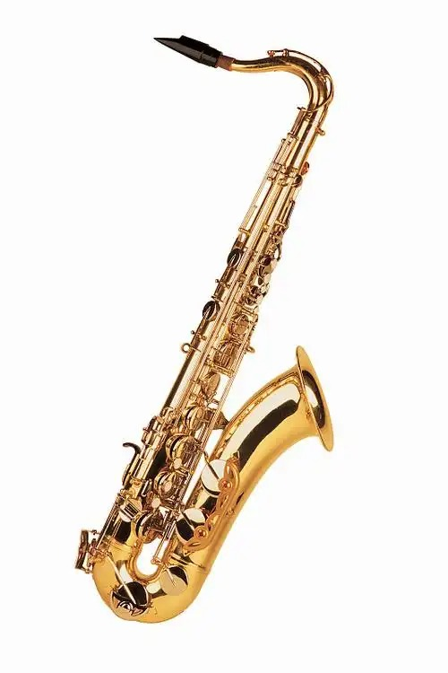
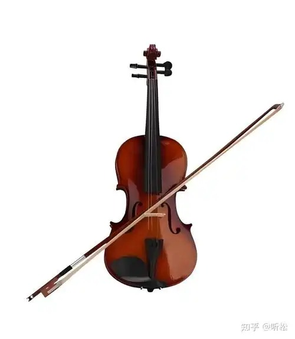
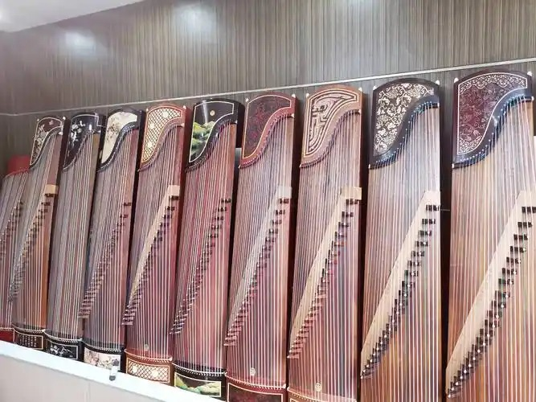
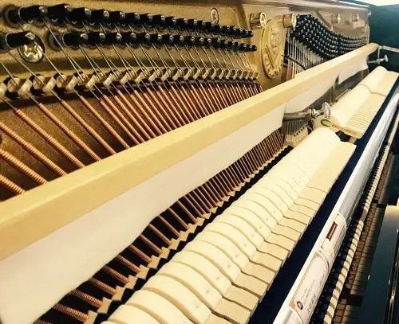

西塔琴
¥18,000印度古典乐器代表，音色悠扬婉转，是印度音乐文化中不可或缺的灵魂乐器。
声音连接文化，音乐传承文明。艺声乐器致力于传播世界乐器知识， 搭建音乐文化交流平台，让每一种乐器的声音都被世界听见。
汇集世界各地的经典乐器，从东方到西方，聆听不同文化的声音

印度古典乐器代表，音色悠扬婉转，是印度音乐文化中不可或缺的灵魂乐器。

中国传统弹拨乐器，音色清亮悠远，承载着数千年的中华音乐文明。

乐器之王，音域宽广表现力丰富，三百年来一直是西方音乐的核心乐器。

西非传统打击乐器，节奏感极强，被誉为"会说话的鼓"。

爵士乐灵魂乐器，音色温暖醇厚，由比利时乐器制造家阿道夫·萨克斯发明。

弦乐器皇后，音色细腻表现力强，是交响乐团中最重要的旋律乐器之一。
探索乐器背后的文化故事，了解音乐与文明的深厚渊源

古筝作为中国传统乐器的重要代表，承载着中华文明数千年的音乐记忆。
西塔琴不仅是乐器，更是印度哲学与精神世界的音乐表达。

三百年钢琴发展史，见证西方音乐从巴洛克到现代的辉煌历程。